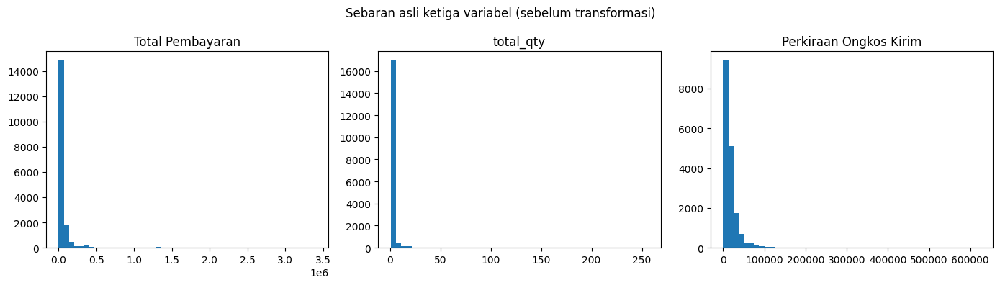
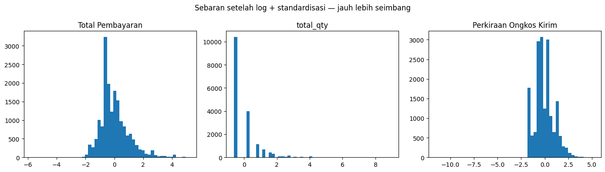
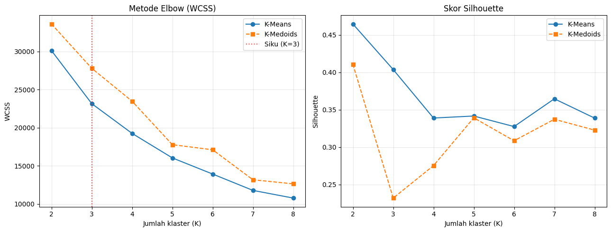
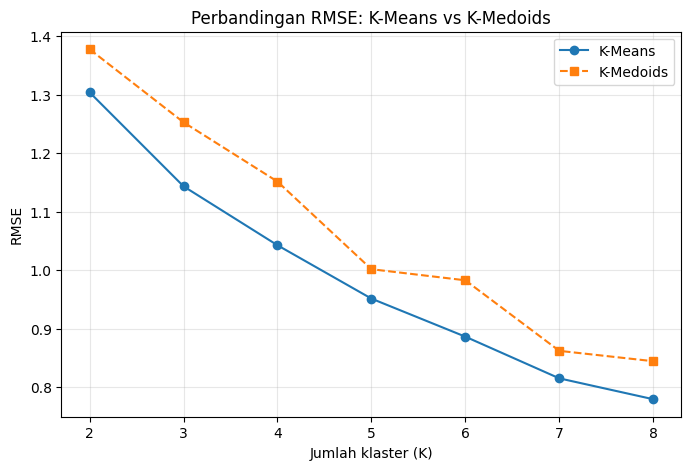

Penelitian ini mengelompokkan 17.706 transaksi nyata sebuah toko Shopee menjadi segmen yang bisa ditindaklanjuti, mengikuti kerangka CRISP-DM.
Latar belakang. Sebuah toko e-commerce memiliki ribuan transaksi, tetapi belum mengenali tipe-tipe pelanggannya. Tanpa pengelompokan, semua pelanggan diperlakukan sama, sehingga strategi pemasaran kurang tepat sasaran.
Tujuan. Mengelompokkan transaksi menjadi beberapa segmen berdasarkan pola pembelian dan lokasi geografis, agar tiap segmen dapat ditangani dengan strategi yang sesuai.
Data sudah dibersihkan menjadi empat variabel. Data tidak memiliki ID pelanggan, sehingga setiap baris mewakili satu transaksi, bukan satu orang, dan segmentasi dilakukan pada tingkat transaksi.
| Total Pembayaran | Jumlah Barang | Ongkos Kirim | |
|---|---|---|---|
| Simpangan baku | 154.367 | 7,25 | 20.775 |
| Minimum | 165 | 1 | 1 |
| Median | 26.398 | 1 | 10.000 |
| Maksimum | 3.403.591 | 256 | 624.000 |

np.log1p): meredam nilai ekstrem tanpa mengubah urutan besar-kecil data.X_log = np.log1p(df[fitur].values) # langkah 1: log
scaler = StandardScaler().fit(X_log) # langkah 2: standardisasi
X = scaler.transform(X_log)
K-Means memakai rata-rata anggota sebagai pusat klaster, sedangkan K-Medoids memakai salah satu anggota nyata. K-Medoids ditulis manual dengan metode alternate. Jumlah klaster diuji untuk K = 2 sampai 8.

Tiga metrik dipakai supaya perbandingan tidak bergantung pada satu ukuran. RMSE memang sedikit berpihak pada K-Means karena rata-rata meminimalkan jarak kuadrat, sehingga Silhouette dan DBI yang netral dipakai sebagai penguat.
| Metrik pada K = 3 | K-Means | K-Medoids | Arah terbaik |
|---|---|---|---|
| RMSE | 1,144 | 1,253 | Lebih kecil |
| Silhouette | 0,404 | 0,232 | Lebih besar |
| Davies-Bouldin | 1,005 | 1,140 | Lebih kecil |

| Segmen K-Means, K = 3 | Transaksi | Porsi | Median belanja | Median barang | Median ongkir |
|---|---|---|---|---|---|
| Pembeli Hemat | 11.291 | 63,8% | 18.900 | 1 | 8.000 |
| Pembeli Reguler | 5.180 | 29,3% | 54.000 | 2 | 22.500 |
| Pelanggan Grosir Premium | 1.235 | 7,0% | 128.764 | 8 | 34.000 |
Kesimpulan. K-Means lebih baik daripada K-Medoids pada 20 dari 21 perbandingan metrik. K-Medoids tidak lebih unggul di sini karena nilai ekstrem sudah diredam oleh transformasi log dan standardisasi.
Model K-Means diterapkan menjadi dasbor yang berjalan langsung di browser: profil segmen, omzet per segmen, sebaran provinsi, dan klasifikasi transaksi baru memakai pusat klaster serta parameter standardisasi dari model yang sama.